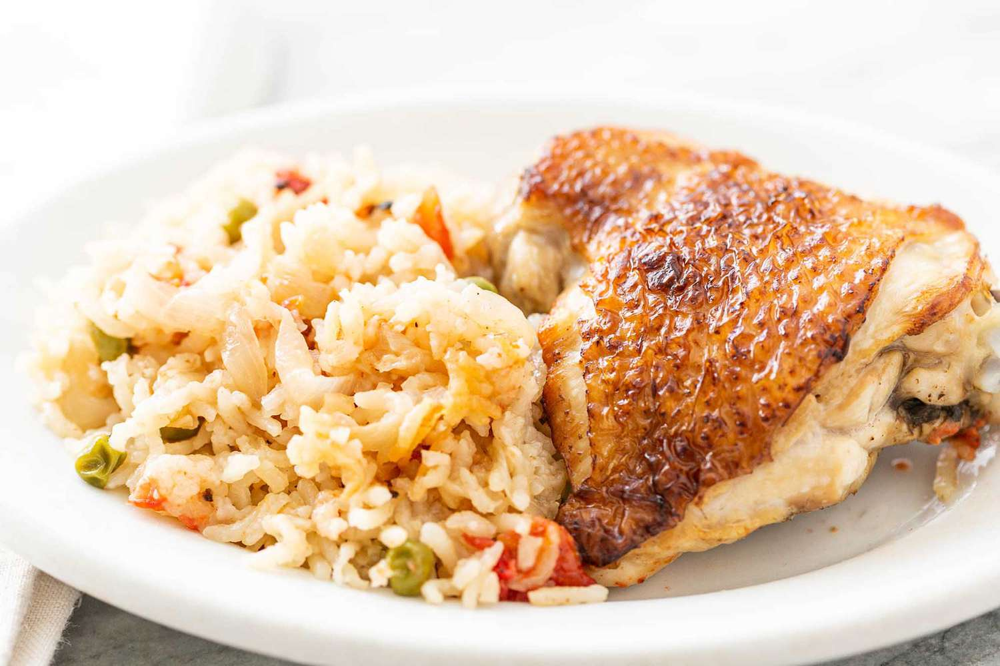

In order to make chicken follow these steps:

- chop one onion and fry it in your pan until it turns brown.
- add chicken pieces to your pan, lower the heat, close the lid and let them fry for some time.
- open the lid and add tomato sauce and chopped potatos to the pan.
- add boiling water to the mix, and close the lid again
- wait for 45 mins, then its ready.